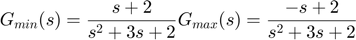
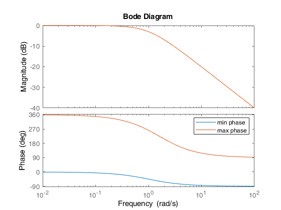
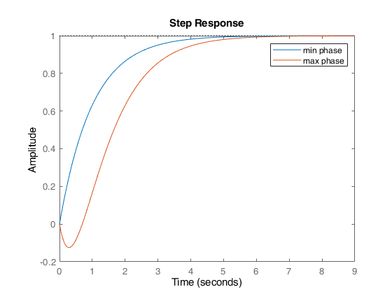
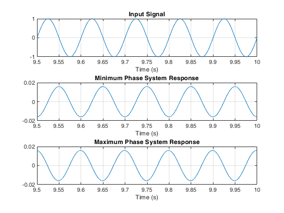

Contents
clc;clear;close all;
Introduction
Title: Minimum Phase and Non-Minimum Phase Systems
Author: Siavash Emami
Date: June 13th, 2022
Description: This script shows how minimum and non-minimum phase systems work and what are the differences in them. Bode plot, step response and harmonic response of two example systems are shown in the following code.
For more information please refer to Takane Magazine
Bode plots
two systems are

both systems have same magnitude, but minimum phase system has a phase shift of 90 degrees in frequency domain, but maximum phase system has 270 degrees phase shift. this is shown in figure 1
min_phase = tf([1 2],[1 3 2]); max_phase = tf([-1 2],[1 3 2]); figure(1) bode(min_phase) hold on bode(max_phase) legend('min phase', 'max phase')
Step Responses
A non-minimum phase system undershoots in response to a step input and then follows the error, in contrast with minimum phase system which directly responds to error.
figure(2) step(min_phase) hold on step(max_phase) legend('min phase', 'max phase')
Harmonic Response
As seen in the first section, the phase shift to each system is different, for example when a harmonic input with frequency of 10Hz is applied to the systems, phase of minimum phase system will be approximately -90 degrees and for maximum phase system will be +90 degrees. it can be seen in the plots below that every peak of minimum and maximum phase response is located on a zero of input signal, and they have 180 degrees difference with each other.
tau = 0.1; Tf = 10; Ts = 0.00005; [u,t] = gensig("sine",tau,Tf,Ts); y_min = lsim(min_phase,u,t,Ts); y_max = lsim(max_phase,u,t,Ts); figure(3) subplot(3,1,1) plot(t(190001:end),u(190001:end)) title("Input Signal") xlabel("Time (s)") grid on subplot(3,1,2) plot(t(190001:end), y_min(190001:end)) title("Minimum Phase System Response") xlabel("Time (s)") grid on subplot(3,1,3) plot(t(190001:end), y_max(190001:end)) title("Maximum Phase System Response") xlabel("Time (s)") grid on